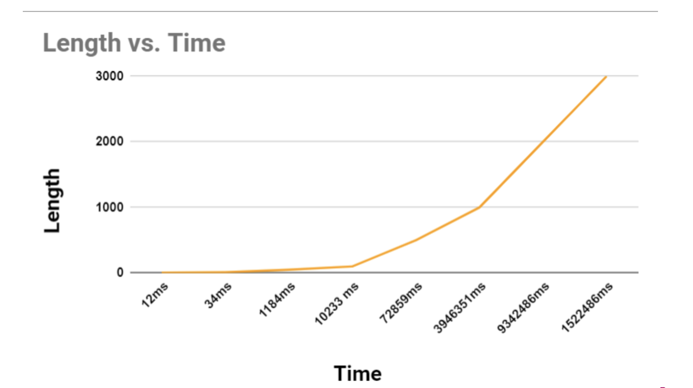

Analysis
Initialization:
- A table dp (2D vector) is created to store the maximum number of pairs that can be formed within a substring of the RNA sequence.
- A map mp is used to remember the decision points, i.e., which indices in the substring form a bond that leads to the optimal solution.
Dynamic Programming (DP) Table Calculation (solve function):
- The algorithm fills the dp table iteratively. It starts by considering all possible substrings of the RNA sequence that are at least 5 characters long (since a pair must be separated by at least one character to prevent overlapping).
- For each substring, it calculates the maximum number of pairs by trying all possible splits where the ends of the substring can form a pair, updating the dp value for that substring if a better solution (more pairs) is found.
- The decision (which index is paired with the last character of the substring to form the optimal solution) is stored in the mp map.
Base Pair Identification (makePairs function):
- Once the dp table is fully computed, the makePairs function uses the decisions stored in the mp map to reconstruct the actual pairs by backtracking from the full sequence down to the smallest substrings.
- The resulting pairs are stored in the vector bond_index, which can then be used to determine which bases are paired in the optimal solution.
Result Output:
- After executing makePairs, the program prints the number of base pairs and the indices of the paired bases in the RNA sequence.
Time Complexity: O(n³)
Space Complexity: O(n²)
-
From the table we can observe that The time taken for the computations
increases non-linearly with respect to the input length. This is
expected given the time complexity of O(n³), which was previously
discussed.
-
The increase in time becomes significantly more pronounced as the
input length grows. For instance, the time jumps from 1184ms for a
length of 50 to 10233ms for a length of 100, almost a tenfold increase
for a twofold increase in length.
-
The algorithm becomes impractical for very large inputs, as seen with
the length of 3000 taking over 15 million milliseconds (more than 4
hours).
-
The graph shows a curve that suggests a polynomial trend, consistent
with the cubic time complexity of the algorithm. The steepness of the
curve at larger values of 'n' (input size) indicates a growth pattern
that surpasses quadratic growth, which aligns with the O(n³) expected
behavior.
Also, we observed that the algorithm doesn’t execute on an 8GB RAM
machine for input sizes greater than 3500. This is most likely due to
the O(n²) space complexity resulting from the dp and map data structures
used by the algorithm. This suggests that the practicality of using this
algorithm for very large inputs is questionable. If processing times are
too long or if the program terminates due to resource constraints, it
would not be suitable for practical use without optimization.
Comparative Analysis:
| Length |
Time |
| 5 |
12 ms |
| 10 |
34 ms |
| 50 |
1184 ms |
| 100 |
10233 ms |
| 500 |
72859 ms |
| 1000 |
3946351 ms |
| 2000 |
9342486 ms |
| 3000 |
1522486 ms |
